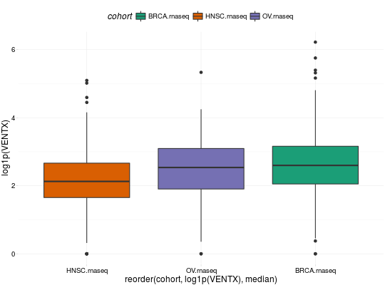

expressionsTCGA(..., extract.cols = NULL, extract.names = TRUE)
bcr_patient_barcode.
If NULL (by default) all columns are returned.....Function gathers expressions over multiple TCGA datasets and extracts expressions for desired genes. See rnaseq, mRNA, RPPA, miRNASeq, methylation.
Input data.frames should contain column bcr_patient_barcode if extract.cols is specified.
If you have any problems, issues or think that something is missing or is not clear please post an issue on https://github.com/RTCGA/RTCGA/issues.
## for all examples library(dplyr) library(tidyr)Error in library(tidyr): there is no package called ‘tidyr’library(ggplot2) ## RNASeq expressions library(RTCGA.rnaseq) expressionsTCGA(BRCA.rnaseq, OV.rnaseq, HNSC.rnaseq, extract.cols = "VENTX|27287") %>% rename(cohort = dataset, VENTX = `VENTX|27287`) %>% filter(substr(bcr_patient_barcode, 14, 15) == "01") %>% #cancer samples ggplot(aes(y = log1p(VENTX), x = reorder(cohort, log1p(VENTX), median), fill = cohort)) + geom_boxplot() + theme_RTCGA() + scale_fill_brewer(palette = "Dark2")Scale for 'fill' is already present. Adding another scale for 'fill', which will replace the existing scale.
## mRNA expressions library(tidyr)Error in library(tidyr): there is no package called ‘tidyr’library(RTCGA.mRNA)Error: package ‘RTCGA’ required by ‘RTCGA.mRNA’ could not be foundexpressionsTCGA(BRCA.mRNA, COAD.mRNA, LUSC.mRNA, UCEC.mRNA, extract.cols = c("ARHGAP24", "TRAV20")) %>% rename(cohort = dataset) %>% select(-bcr_patient_barcode) %>% gather(cohort) -> data2plotError in expressionsTCGA(BRCA.mRNA, COAD.mRNA, LUSC.mRNA, UCEC.mRNA, extract.cols = c("ARHGAP24", "TRAV20")): object 'BRCA.mRNA' not foundnames(data2plot)[2] <- "mRNA"Error in names(data2plot)[2] <- "mRNA": object 'data2plot' not founddata2plot %>% ggplot(aes(y = value, x = reorder(cohort, value, mean), fill = cohort)) + geom_boxplot() + theme_RTCGA() + scale_fill_brewer(palette = "Set3") + facet_grid(mRNA~.) + theme(legend.position = "top")Error in eval(expr, envir, enclos): object 'data2plot' not found## RPPA expressions library(RTCGA.RPPA) expressionsTCGA(ACC.RPPA, BLCA.RPPA, BRCA.RPPA, extract.cols = c("4E-BP1_pS65", "4E-BP1")) %>% rename(cohort = dataset) %>% select(-bcr_patient_barcode) %>% gather(cohort) -> data2plotError in function_list[[k]](value): could not find function "gather"names(data2plot)[2] <- "RPPA"Error in names(data2plot)[2] <- "RPPA": object 'data2plot' not founddata2plot %>% ggplot(aes(fill = cohort, y = value, x = RPPA)) + geom_boxplot() + theme_dark(base_size = 15) + scale_fill_manual(values = c("#eb6420", "#207de5", "#fbca04")) + coord_flip() + theme(legend.position = "top") + geom_jitter(alpha = 0.5, col = "white", size = 0.6, width = 0.7)Error in eval(expr, envir, enclos): object 'data2plot' not found## miRNASeq expressions library(RTCGA.miRNASeq)Error: package ‘RTCGA’ required by ‘RTCGA.miRNASeq’ could not be found# miRNASeq has bcr_patienct_barcode in rownames... mutate(ACC.miRNASeq, bcr_patient_barcode = substr(rownames(ACC.miRNASeq), 1, 25)) -> ACC.miRNASeq.bcrError in mutate_(.data, .dots = lazyeval::lazy_dots(...)): object 'ACC.miRNASeq' not foundmutate(CESC.miRNASeq, bcr_patient_barcode = substr(rownames(CESC.miRNASeq), 1, 25)) -> CESC.miRNASeq.bcrError in mutate_(.data, .dots = lazyeval::lazy_dots(...)): object 'CESC.miRNASeq' not foundmutate(CHOL.miRNASeq, bcr_patient_barcode = substr(rownames(CHOL.miRNASeq), 1, 25)) -> CHOL.miRNASeq.bcrError in mutate_(.data, .dots = lazyeval::lazy_dots(...)): object 'CHOL.miRNASeq' not foundmutate(LAML.miRNASeq, bcr_patient_barcode = substr(rownames(LAML.miRNASeq), 1, 25)) -> LAML.miRNASeq.bcrError in mutate_(.data, .dots = lazyeval::lazy_dots(...)): object 'LAML.miRNASeq' not foundmutate(PAAD.miRNASeq, bcr_patient_barcode = substr(rownames(PAAD.miRNASeq), 1, 25)) -> PAAD.miRNASeq.bcrError in mutate_(.data, .dots = lazyeval::lazy_dots(...)): object 'PAAD.miRNASeq' not foundmutate(THYM.miRNASeq, bcr_patient_barcode = substr(rownames(THYM.miRNASeq), 1, 25)) -> THYM.miRNASeq.bcrError in mutate_(.data, .dots = lazyeval::lazy_dots(...)): object 'THYM.miRNASeq' not foundmutate(LGG.miRNASeq, bcr_patient_barcode = substr(rownames(LGG.miRNASeq), 1, 25)) -> LGG.miRNASeq.bcrError in mutate_(.data, .dots = lazyeval::lazy_dots(...)): object 'LGG.miRNASeq' not foundmutate(STAD.miRNASeq, bcr_patient_barcode = substr(rownames(STAD.miRNASeq), 1, 25)) -> STAD.miRNASeq.bcrError in mutate_(.data, .dots = lazyeval::lazy_dots(...)): object 'STAD.miRNASeq' not foundexpressionsTCGA(ACC.miRNASeq.bcr, CESC.miRNASeq.bcr, CHOL.miRNASeq.bcr, LAML.miRNASeq.bcr, PAAD.miRNASeq.bcr, THYM.miRNASeq.bcr, LGG.miRNASeq.bcr, STAD.miRNASeq.bcr, extract.cols = c("machine", "hsa-mir-101-1", "miRNA_ID")) %>% rename(cohort = dataset) %>% filter(miRNA_ID == "read_count") %>% select(-bcr_patient_barcode, -miRNA_ID) %>% gather(cohort, machine) -> data2plotError in expressionsTCGA(ACC.miRNASeq.bcr, CESC.miRNASeq.bcr, CHOL.miRNASeq.bcr, LAML.miRNASeq.bcr, PAAD.miRNASeq.bcr, THYM.miRNASeq.bcr, LGG.miRNASeq.bcr, STAD.miRNASeq.bcr, extract.cols = c("machine", "hsa-mir-101-1", "miRNA_ID")): object 'ACC.miRNASeq.bcr' not foundnames(data2plot)[3:4] <- c("drop","value")Error in names(data2plot)[3:4] <- c("drop", "value"): object 'data2plot' not founddata2plot %>% select(-drop) %>% mutate(value = as.numeric(value)) %>% ggplot(aes(x = cohort, y = log1p(value), fill = as.factor(machine)) )+ geom_boxplot() + theme_RTCGA(base_size = 13) + coord_flip() + theme(legend.position = "top") + scale_fill_brewer(palette = "Paired") + ggtitle("hsa-mir-101-1")Error in eval(expr, envir, enclos): object 'data2plot' not found
RTCGA-package,
boxplotTCGA, checkTCGA,
convertTCGA, datasetsTCGA,
downloadTCGA, heatmapTCGA,
infoTCGA, installTCGA,
kmTCGA, mutationsTCGA,
pcaTCGA, readTCGA,
survivalTCGA, theme_RTCGA